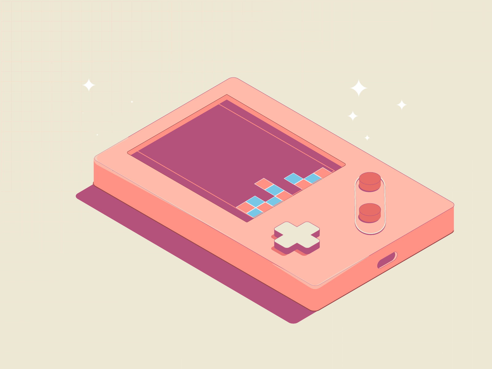
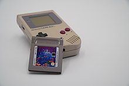

La Historia del Tetris
Un juego que ha dejado huella en la historia de los videojuegos.
Origen y Creación
Tetris fue creado en 1984 por Alexey Pajitnov, un programador ruso que trabajaba en la Academia de Ciencias de la URSS. El juego se inspiró en un rompecabezas llamado pentominó y fue desarrollado en el ordenador Elektronika 60.
Expansión Global
El juego se expandió rápidamente y llegó a Occidente, siendo un gran éxito en plataformas como Game Boy en 1989. Fue uno de los primeros juegos en demostrar el potencial del mercado de los videojuegos portátiles.
Legado
Hoy en día, Tetris sigue siendo un referente en la industria del videojuego, con múltiples versiones y adaptaciones en diversas plataformas. Su mecánica sencilla pero adictiva lo ha convertido en un clásico atemporal.